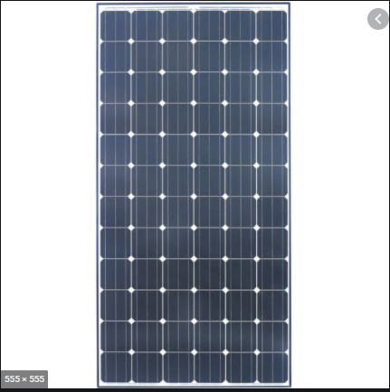
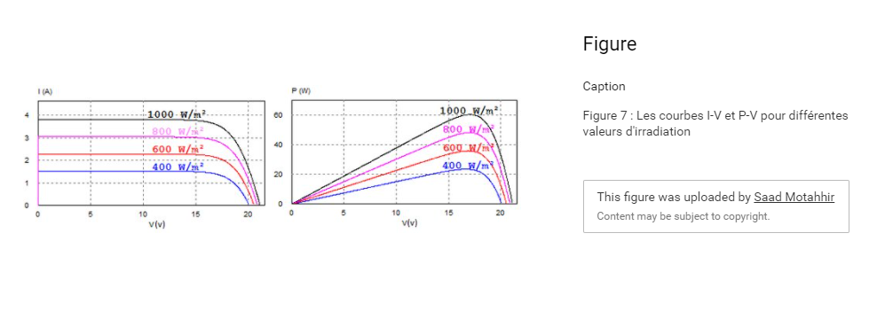

Faire un système Photovoltaïque Maison¶
La conversion de l’énergie solaire photovoltaïque est particulièrement utile pour une production d’électricité décentralisé, en autonomie des réseaux. Par exemple, pour un terrain isolé: eau douce (pompe), électricité du soir, etc. Plus les besoins sont grands, plus il faut de la surface, et donc augmente le prix et l’impact écologique dû aux productions de masses. Le plus important est donc de d’abord minimiser ses besoins avant de designer son système. Si l’objectif est de faire de la chaleur (chauffage, eau chaude sanitaire), il est plus efficace de penser à un système thermique.
Description d’un système photovoltaïque¶
Le panneau¶

Un panneau photovoltaïque, ou panneau PV, est clairement du domaine de la high-tech. Le fonctionnement est complexe, l’homme s’étant approprié cette technologie via les théories de mécanique quantique. Le premier panneau PV est apparu en 1954.
En sortie du panneau PV, on obtient un courant continu. La valeur du voltage et de l’intensité en sortie du panneau varie en fonction de deux choses:
l’énergie solaire en entrée
le branchement électrique en aval.
De manière théorique, on observe cela sur les courbes I-V, c’est-à-dire Intensité-Voltage. Lorsque l’on impose une tension au panneau, il est alors possible de lire sur cette courbe combien d’ampères le panneau débitera.

Chaque courbe I-V dépend du panneau utilisé. Le point où la puissance maximale est atteint varie, d’où le besoin d’un MPPT (Maximum Power Point Tracker). Moyennant quelques pertes, il devrait être possible d’éviter ce matériel, qui représente un coût supplémentaire. Je ne sais pas encore comment faire, mais je compte me renseigner.
Un panneau photovoltaïque donne aujourd’hui, dans le commerce, un rendement d’environ 18% de la conversion d’énergie solaire. Cela correspond donc à 180 W/m², lorsqu’une irradiation solaire de de 1000W/m² est disponible – ce qui est relativement rare.
Le site PVGIS permet de faire la quasi-totalité des calculs qu’il est possible de faire pour estimer le rendement de son installation.
Le MPPT¶
Le MPPT, en plus de maximiser la production d’énergie, permet de gérer la charge de la batterie (le panneau est déconnecté si cette dernière est remplie), et peut donner accès à une prise (prise 5V, pour un téléphone - selon le MPPT), ou encore à une sortie pour onduleur. Il suffit alors de brancher le panneau et la batterie au MPPT en suivant les bons branchements.
La batterie¶
Les batteries contemporaines sont essentiellement des batteries à plomb (voitures). Les batteries lithium font néanmoins une grande montée en puissance dans le capitalisme vert moderne: la voiture électrique, sensée résoudre les problèmes de transport sans émission de \(CO_2\), en est blindée. Le soucis de production est détaillé ci-bas.
Description personelle de la production moderne¶
Dernièrement, cette technologie est déployée à grande échelle. La première motivation vient, de manière classique au XXIème siècle, du prix: le tarif est tellement descendu, de par les développement technologiques et par la production de masse, que le PV pourrait vite consister en l’énergie la moins chère (selon les régions du monde, s’entend). Cela ne va pas sans un impact écologique fort, de par l’extraction des minerais (et, principalement, leur raffinement). De même, les batteries nécessitent une grande quantité de lithium. Il est donc nécessaire, aujourd’hui et selon moi, de limiter leur usage – en faisant une balance bénéfice/impact. Comme a pu le montrer le documentaire Arte La face cachée des énergies vertes, le capitalisme débridé fait bien des ravages à la justice sociale, les pays riches vivant d’une énergie propre fournie par les cancers des pays pauvres. Il me semble que le soucis est plus le capitalisme que la technologie, un grand nombre de laboratoires commençant à proposer des alternatives de construction pour des produits européens plus respectueux. L’impact n’étant jamais nul, la priorité est à la réduction des besoins (et ce de manière global).